<!DOCTYPE html>
<!--[if IE 8]><html class="no-js lt-ie9" lang="en" > <![endif]-->
<!--[if gt IE 8]><!--> <html class="no-js" lang="en" > <!--<![endif]-->
<head>
  <meta charset="utf-8">
  
  <meta name="viewport" content="width=device-width, initial-scale=1.0">
  
  <title>User Manual &mdash; Automated Thin Section Analysis 1.0.0 documentation</title>
  

  
  
  
  

  
  <script type="text/javascript" src="../_static/js/modernizr.min.js"></script>
  
    
      <script type="text/javascript" id="documentation_options" data-url_root="../" src="../_static/documentation_options.js"></script>
        <script type="text/javascript" src="../_static/jquery.js"></script>
        <script type="text/javascript" src="../_static/underscore.js"></script>
        <script type="text/javascript" src="../_static/doctools.js"></script>
        <script type="text/javascript" src="../_static/language_data.js"></script>
    
    <script type="text/javascript" src="../_static/js/theme.js"></script>

    

  
  <link rel="stylesheet" href="../_static/css/theme.css" type="text/css" />
  <link rel="stylesheet" href="../_static/pygments.css" type="text/css" />
    <link rel="index" title="Index" href="../genindex.html" />
    <link rel="search" title="Search" href="../search.html" />
    <link rel="next" title="kmeans" href="../mods/kmeans.html" />
    <link rel="prev" title="Automated Thin Section Analysis" href="../index.html" /> 
</head>

<body class="wy-body-for-nav">

   
  <div class="wy-grid-for-nav">
    
    <nav data-toggle="wy-nav-shift" class="wy-nav-side">
      <div class="wy-side-scroll">
        <div class="wy-side-nav-search" >
          

          
            <a href="../index.html" class="icon icon-home"> Automated Thin Section Analysis
          

          
          </a>

          
            
            
          

          
<div role="search">
  <form id="rtd-search-form" class="wy-form" action="../search.html" method="get">
    <input type="text" name="q" placeholder="Search docs" />
    <input type="hidden" name="check_keywords" value="yes" />
    <input type="hidden" name="area" value="default" />
  </form>
</div>

          
        </div>

        <div class="wy-menu wy-menu-vertical" data-spy="affix" role="navigation" aria-label="main navigation">
          
            
            
              
            
            
              <p class="caption"><span class="caption-text">Guides:</span></p>
<ul class="current">
<li class="toctree-l1 current"><a class="current reference internal" href="#">User Manual</a><ul>
<li class="toctree-l2"><a class="reference internal" href="#downloads">Downloads</a></li>
<li class="toctree-l2"><a class="reference internal" href="#installation">Installation</a></li>
<li class="toctree-l2"><a class="reference internal" href="#running-test-suites">Running Test Suites</a></li>
</ul>
</li>
<li class="toctree-l1"><a class="reference internal" href="#example-butterfly-segmentation">Example: Butterfly Segmentation</a><ul>
<li class="toctree-l2"><a class="reference internal" href="#image-loading">Image Loading</a></li>
<li class="toctree-l2"><a class="reference internal" href="#segmentation">Segmentation</a></li>
<li class="toctree-l2"><a class="reference internal" href="#segment-clustering">Segment Clustering</a></li>
<li class="toctree-l2"><a class="reference internal" href="#edge-analysis">Edge analysis</a></li>
<li class="toctree-l2"><a class="reference internal" href="#segment-merging">Segment Merging</a></li>
<li class="toctree-l2"><a class="reference internal" href="#repeat">Repeat</a></li>
<li class="toctree-l2"><a class="reference internal" href="#segmentation-analysis">Segmentation Analysis</a></li>
</ul>
</li>
</ul>
<p class="caption"><span class="caption-text">Documentation:</span></p>
<ul>
<li class="toctree-l1"><a class="reference internal" href="../mods/kmeans.html">kmeans</a></li>
<li class="toctree-l1"><a class="reference internal" href="../mods/merging.html">merging</a></li>
<li class="toctree-l1"><a class="reference internal" href="../mods/pre_post_processing.html">pre_post_processing</a></li>
<li class="toctree-l1"><a class="reference internal" href="../mods/tools.html">tools</a></li>
</ul>
<p class="caption"><span class="caption-text">Housekeeping:</span></p>
<ul>
<li class="toctree-l1"><a class="reference internal" href="../mods/Licence.html">Licence</a></li>
<li class="toctree-l1"><a class="reference internal" href="../mods/requirements.html">Requirements</a></li>
</ul>

            
          
        </div>
      </div>
    </nav>

    <section data-toggle="wy-nav-shift" class="wy-nav-content-wrap">

      
      <nav class="wy-nav-top" aria-label="top navigation">
        
          <i data-toggle="wy-nav-top" class="fa fa-bars"></i>
          <a href="../index.html">Automated Thin Section Analysis</a>
        
      </nav>


      <div class="wy-nav-content">
        
        <div class="rst-content">
        
          


<div role="navigation" aria-label="breadcrumbs navigation">

  <ul class="wy-breadcrumbs">
    
      <li><a href="../index.html">Docs</a> &raquo;</li>
        
      <li>User Manual</li>
    
    
      <li class="wy-breadcrumbs-aside">
        
            
            <a href="../_sources/man/User_Manual.rst.txt" rel="nofollow"> View page source</a>
          
        
      </li>
    
  </ul>

  
  <hr/>
</div>
          <div role="main" class="document" itemscope="itemscope" itemtype="http://schema.org/Article">
           <div itemprop="articleBody">
            
  <div class="section" id="user-manual">
<h1>User Manual<a class="headerlink" href="#user-manual" title="Permalink to this headline">¶</a></h1>
<p>Instillation and usage instructions for the Thin Section Analysis (TSA)
python package.</p>
<p>Created by Richard Boyne (<a class="reference external" href="mailto:rmb115&#37;&#52;&#48;ic&#46;ac&#46;uk">rmb115<span>&#64;</span>ic<span>&#46;</span>ac<span>&#46;</span>uk</a>) on 25th August 2019</p>
<div class="section" id="downloads">
<h2>Downloads<a class="headerlink" href="#downloads" title="Permalink to this headline">¶</a></h2>
<p>The software is kept in the github repo:
<a class="reference external" href="https://github.com/msc-acse/acse-9-independent-research-project-Boyne272.git">https://github.com/msc-acse/acse-9-independent-research-project-Boyne272.git</a></p>
<p>It contains a setup.py for instillation and all code is kept in the TSA
directory.</p>
<p>The following code will clones the repo locally (checked in google
colab).</p>
<div class="code ipython3 highlight-default notranslate"><div class="highlight"><pre><span></span>from getpass import getpass
from gettext import gettext
import os

# if we have not already in a repo
if not os.path.isdir(&quot;.git&quot;):

    # get username and password
    user = input(&#39;github username: &#39;)
    password = getpass(&#39;github password: &#39;)
    os.environ[&#39;GITHUB_AUTH&#39;] = user + &#39;:&#39; + password

    # clone the repo and move into it
    !git clone --quiet https://$GITHUB_AUTH@github.com/msc-acse/acse-9-independent-research-project-Boyne272.git TSA_repo
    %cd TSA_repo

    # swap to the wanted branch
    !git checkout Release --quiet

# show where we are
!git show --summary
</pre></div>
</div>
<div class="highlight-default notranslate"><div class="highlight"><pre><span></span>github username: Boyne272
github password: ··········
/content/TSA_repo
commit bc2b4667f6905c3795451de25b9d98438e3e401b (HEAD -&gt; Release, origin/Release)
Author: Richard Boyne &lt;boynerichard@yahoo.co.uk&gt;
Date:   Tue Aug 27 14:16:50 2019 +0000

    moved all old code out of the TSA pack folder

    now it is not brought in when installing, still kept around as might be useful

 delete mode 100644 TSA/merging/legacy/tools.py
 rename {TSA/kmeans/legacy =&gt; notebooks/older_code}/Kmeans_Examples.ipynb (100%)
 rename {TSA/merging/legacy =&gt; notebooks/older_code}/image_filters.py (100%)
 rename {TSA/kmeans/legacy =&gt; notebooks/older_code}/kmeans_basic.py (100%)
 rename {TSA/kmeans/legacy =&gt; notebooks/older_code}/kmeans_img.py (100%)
 rename {TSA/kmeans/legacy =&gt; notebooks/older_code}/kmeans_local.py (100%)
 rename {TSA/kmeans/legacy =&gt; notebooks/older_code}/kmeans_local_failed.py (100%)
 rename {TSA/kmeans/legacy =&gt; notebooks/older_code}/kmeans_multi_fail.py (100%)
 rename {TSA/merging/legacy =&gt; notebooks/older_code}/merge_wrapper.py (100%)
 rename {TSA/merging/legacy =&gt; notebooks/older_code}/merge_wrapper_failed.py (100%)
 rename {TSA/merging/legacy =&gt; notebooks/older_code}/preprocessing.py (100%)
 rename {TSA/merging/legacy =&gt; notebooks/older_code}/recombination_wrapper.py (100%)
 rename {TSA/kmeans/legacy =&gt; notebooks/older_code}/tools.py (100%)
 rename {TSA/kmeans/legacy =&gt; notebooks/older_code}/tst_kmeans_basic.py (100%)
 rename {TSA/kmeans/legacy =&gt; notebooks/older_code}/tst_kmeans_img.py (100%)
 rename {TSA/kmeans/legacy =&gt; notebooks/older_code}/tst_kmeans_local.py (100%)
</pre></div>
</div>
</div>
<div class="section" id="installation">
<h2>Installation<a class="headerlink" href="#installation" title="Permalink to this headline">¶</a></h2>
<p>To install the module first the requierments need be installed, this can
be done with.</p>
<div class="code ipython3 highlight-default notranslate"><div class="highlight"><pre><span></span>!pip install -r requirements.txt
</pre></div>
</div>
<div class="highlight-default notranslate"><div class="highlight"><pre><span></span><span class="n">Requirement</span> <span class="n">already</span> <span class="n">satisfied</span><span class="p">:</span> <span class="n">numpy</span><span class="o">==</span><span class="mf">1.16</span><span class="o">.</span><span class="mi">4</span> <span class="ow">in</span> <span class="o">/</span><span class="n">usr</span><span class="o">/</span><span class="n">local</span><span class="o">/</span><span class="n">lib</span><span class="o">/</span><span class="n">python3</span><span class="o">.</span><span class="mi">6</span><span class="o">/</span><span class="n">dist</span><span class="o">-</span><span class="n">packages</span> <span class="p">(</span><span class="kn">from</span> <span class="o">-</span><span class="n">r</span> <span class="n">requirements</span><span class="o">.</span><span class="n">txt</span> <span class="p">(</span><span class="n">line</span> <span class="mi">1</span><span class="p">))</span> <span class="p">(</span><span class="mf">1.16</span><span class="o">.</span><span class="mi">4</span><span class="p">)</span>
<span class="n">Requirement</span> <span class="n">already</span> <span class="n">satisfied</span><span class="p">:</span> <span class="n">matplotlib</span><span class="o">==</span><span class="mf">3.0</span><span class="o">.</span><span class="mi">3</span> <span class="ow">in</span> <span class="o">/</span><span class="n">usr</span><span class="o">/</span><span class="n">local</span><span class="o">/</span><span class="n">lib</span><span class="o">/</span><span class="n">python3</span><span class="o">.</span><span class="mi">6</span><span class="o">/</span><span class="n">dist</span><span class="o">-</span><span class="n">packages</span> <span class="p">(</span><span class="kn">from</span> <span class="o">-</span><span class="n">r</span> <span class="n">requirements</span><span class="o">.</span><span class="n">txt</span> <span class="p">(</span><span class="n">line</span> <span class="mi">2</span><span class="p">))</span> <span class="p">(</span><span class="mf">3.0</span><span class="o">.</span><span class="mi">3</span><span class="p">)</span>
<span class="n">Requirement</span> <span class="n">already</span> <span class="n">satisfied</span><span class="p">:</span> <span class="n">scipy</span><span class="o">==</span><span class="mf">1.3</span><span class="o">.</span><span class="mi">1</span> <span class="ow">in</span> <span class="o">/</span><span class="n">usr</span><span class="o">/</span><span class="n">local</span><span class="o">/</span><span class="n">lib</span><span class="o">/</span><span class="n">python3</span><span class="o">.</span><span class="mi">6</span><span class="o">/</span><span class="n">dist</span><span class="o">-</span><span class="n">packages</span> <span class="p">(</span><span class="kn">from</span> <span class="o">-</span><span class="n">r</span> <span class="n">requirements</span><span class="o">.</span><span class="n">txt</span> <span class="p">(</span><span class="n">line</span> <span class="mi">3</span><span class="p">))</span> <span class="p">(</span><span class="mf">1.3</span><span class="o">.</span><span class="mi">1</span><span class="p">)</span>
<span class="n">Requirement</span> <span class="n">already</span> <span class="n">satisfied</span><span class="p">:</span> <span class="n">torch</span><span class="o">==</span><span class="mf">1.1</span><span class="o">.</span><span class="mi">0</span> <span class="ow">in</span> <span class="o">/</span><span class="n">usr</span><span class="o">/</span><span class="n">local</span><span class="o">/</span><span class="n">lib</span><span class="o">/</span><span class="n">python3</span><span class="o">.</span><span class="mi">6</span><span class="o">/</span><span class="n">dist</span><span class="o">-</span><span class="n">packages</span> <span class="p">(</span><span class="kn">from</span> <span class="o">-</span><span class="n">r</span> <span class="n">requirements</span><span class="o">.</span><span class="n">txt</span> <span class="p">(</span><span class="n">line</span> <span class="mi">4</span><span class="p">))</span> <span class="p">(</span><span class="mf">1.1</span><span class="o">.</span><span class="mi">0</span><span class="p">)</span>
<span class="n">Requirement</span> <span class="n">already</span> <span class="n">satisfied</span><span class="p">:</span> <span class="n">scikit</span><span class="o">-</span><span class="n">image</span><span class="o">==</span><span class="mf">0.15</span><span class="o">.</span><span class="mi">0</span> <span class="ow">in</span> <span class="o">/</span><span class="n">usr</span><span class="o">/</span><span class="n">local</span><span class="o">/</span><span class="n">lib</span><span class="o">/</span><span class="n">python3</span><span class="o">.</span><span class="mi">6</span><span class="o">/</span><span class="n">dist</span><span class="o">-</span><span class="n">packages</span> <span class="p">(</span><span class="kn">from</span> <span class="o">-</span><span class="n">r</span> <span class="n">requirements</span><span class="o">.</span><span class="n">txt</span> <span class="p">(</span><span class="n">line</span> <span class="mi">5</span><span class="p">))</span> <span class="p">(</span><span class="mf">0.15</span><span class="o">.</span><span class="mi">0</span><span class="p">)</span>
<span class="n">Requirement</span> <span class="n">already</span> <span class="n">satisfied</span><span class="p">:</span> <span class="n">kiwisolver</span><span class="o">&gt;=</span><span class="mf">1.0</span><span class="o">.</span><span class="mi">1</span> <span class="ow">in</span> <span class="o">/</span><span class="n">usr</span><span class="o">/</span><span class="n">local</span><span class="o">/</span><span class="n">lib</span><span class="o">/</span><span class="n">python3</span><span class="o">.</span><span class="mi">6</span><span class="o">/</span><span class="n">dist</span><span class="o">-</span><span class="n">packages</span> <span class="p">(</span><span class="kn">from</span> <span class="nn">matplotlib</span><span class="o">==</span><span class="mf">3.0</span><span class="o">.</span><span class="mi">3</span><span class="o">-&gt;-</span><span class="n">r</span> <span class="n">requirements</span><span class="o">.</span><span class="n">txt</span> <span class="p">(</span><span class="n">line</span> <span class="mi">2</span><span class="p">))</span> <span class="p">(</span><span class="mf">1.1</span><span class="o">.</span><span class="mi">0</span><span class="p">)</span>
<span class="n">Requirement</span> <span class="n">already</span> <span class="n">satisfied</span><span class="p">:</span> <span class="n">pyparsing</span><span class="o">!=</span><span class="mf">2.0</span><span class="o">.</span><span class="mi">4</span><span class="p">,</span><span class="o">!=</span><span class="mf">2.1</span><span class="o">.</span><span class="mi">2</span><span class="p">,</span><span class="o">!=</span><span class="mf">2.1</span><span class="o">.</span><span class="mi">6</span><span class="p">,</span><span class="o">&gt;=</span><span class="mf">2.0</span><span class="o">.</span><span class="mi">1</span> <span class="ow">in</span> <span class="o">/</span><span class="n">usr</span><span class="o">/</span><span class="n">local</span><span class="o">/</span><span class="n">lib</span><span class="o">/</span><span class="n">python3</span><span class="o">.</span><span class="mi">6</span><span class="o">/</span><span class="n">dist</span><span class="o">-</span><span class="n">packages</span> <span class="p">(</span><span class="kn">from</span> <span class="nn">matplotlib</span><span class="o">==</span><span class="mf">3.0</span><span class="o">.</span><span class="mi">3</span><span class="o">-&gt;-</span><span class="n">r</span> <span class="n">requirements</span><span class="o">.</span><span class="n">txt</span> <span class="p">(</span><span class="n">line</span> <span class="mi">2</span><span class="p">))</span> <span class="p">(</span><span class="mf">2.4</span><span class="o">.</span><span class="mi">2</span><span class="p">)</span>
<span class="n">Requirement</span> <span class="n">already</span> <span class="n">satisfied</span><span class="p">:</span> <span class="n">python</span><span class="o">-</span><span class="n">dateutil</span><span class="o">&gt;=</span><span class="mf">2.1</span> <span class="ow">in</span> <span class="o">/</span><span class="n">usr</span><span class="o">/</span><span class="n">local</span><span class="o">/</span><span class="n">lib</span><span class="o">/</span><span class="n">python3</span><span class="o">.</span><span class="mi">6</span><span class="o">/</span><span class="n">dist</span><span class="o">-</span><span class="n">packages</span> <span class="p">(</span><span class="kn">from</span> <span class="nn">matplotlib</span><span class="o">==</span><span class="mf">3.0</span><span class="o">.</span><span class="mi">3</span><span class="o">-&gt;-</span><span class="n">r</span> <span class="n">requirements</span><span class="o">.</span><span class="n">txt</span> <span class="p">(</span><span class="n">line</span> <span class="mi">2</span><span class="p">))</span> <span class="p">(</span><span class="mf">2.5</span><span class="o">.</span><span class="mi">3</span><span class="p">)</span>
<span class="n">Requirement</span> <span class="n">already</span> <span class="n">satisfied</span><span class="p">:</span> <span class="n">cycler</span><span class="o">&gt;=</span><span class="mf">0.10</span> <span class="ow">in</span> <span class="o">/</span><span class="n">usr</span><span class="o">/</span><span class="n">local</span><span class="o">/</span><span class="n">lib</span><span class="o">/</span><span class="n">python3</span><span class="o">.</span><span class="mi">6</span><span class="o">/</span><span class="n">dist</span><span class="o">-</span><span class="n">packages</span> <span class="p">(</span><span class="kn">from</span> <span class="nn">matplotlib</span><span class="o">==</span><span class="mf">3.0</span><span class="o">.</span><span class="mi">3</span><span class="o">-&gt;-</span><span class="n">r</span> <span class="n">requirements</span><span class="o">.</span><span class="n">txt</span> <span class="p">(</span><span class="n">line</span> <span class="mi">2</span><span class="p">))</span> <span class="p">(</span><span class="mf">0.10</span><span class="o">.</span><span class="mi">0</span><span class="p">)</span>
<span class="n">Requirement</span> <span class="n">already</span> <span class="n">satisfied</span><span class="p">:</span> <span class="n">PyWavelets</span><span class="o">&gt;=</span><span class="mf">0.4</span><span class="o">.</span><span class="mi">0</span> <span class="ow">in</span> <span class="o">/</span><span class="n">usr</span><span class="o">/</span><span class="n">local</span><span class="o">/</span><span class="n">lib</span><span class="o">/</span><span class="n">python3</span><span class="o">.</span><span class="mi">6</span><span class="o">/</span><span class="n">dist</span><span class="o">-</span><span class="n">packages</span> <span class="p">(</span><span class="kn">from</span> <span class="nn">scikit</span><span class="o">-</span><span class="n">image</span><span class="o">==</span><span class="mf">0.15</span><span class="o">.</span><span class="mi">0</span><span class="o">-&gt;-</span><span class="n">r</span> <span class="n">requirements</span><span class="o">.</span><span class="n">txt</span> <span class="p">(</span><span class="n">line</span> <span class="mi">5</span><span class="p">))</span> <span class="p">(</span><span class="mf">1.0</span><span class="o">.</span><span class="mi">3</span><span class="p">)</span>
<span class="n">Requirement</span> <span class="n">already</span> <span class="n">satisfied</span><span class="p">:</span> <span class="n">pillow</span><span class="o">&gt;=</span><span class="mf">4.3</span><span class="o">.</span><span class="mi">0</span> <span class="ow">in</span> <span class="o">/</span><span class="n">usr</span><span class="o">/</span><span class="n">local</span><span class="o">/</span><span class="n">lib</span><span class="o">/</span><span class="n">python3</span><span class="o">.</span><span class="mi">6</span><span class="o">/</span><span class="n">dist</span><span class="o">-</span><span class="n">packages</span> <span class="p">(</span><span class="kn">from</span> <span class="nn">scikit</span><span class="o">-</span><span class="n">image</span><span class="o">==</span><span class="mf">0.15</span><span class="o">.</span><span class="mi">0</span><span class="o">-&gt;-</span><span class="n">r</span> <span class="n">requirements</span><span class="o">.</span><span class="n">txt</span> <span class="p">(</span><span class="n">line</span> <span class="mi">5</span><span class="p">))</span> <span class="p">(</span><span class="mf">4.3</span><span class="o">.</span><span class="mi">0</span><span class="p">)</span>
<span class="n">Requirement</span> <span class="n">already</span> <span class="n">satisfied</span><span class="p">:</span> <span class="n">networkx</span><span class="o">&gt;=</span><span class="mf">2.0</span> <span class="ow">in</span> <span class="o">/</span><span class="n">usr</span><span class="o">/</span><span class="n">local</span><span class="o">/</span><span class="n">lib</span><span class="o">/</span><span class="n">python3</span><span class="o">.</span><span class="mi">6</span><span class="o">/</span><span class="n">dist</span><span class="o">-</span><span class="n">packages</span> <span class="p">(</span><span class="kn">from</span> <span class="nn">scikit</span><span class="o">-</span><span class="n">image</span><span class="o">==</span><span class="mf">0.15</span><span class="o">.</span><span class="mi">0</span><span class="o">-&gt;-</span><span class="n">r</span> <span class="n">requirements</span><span class="o">.</span><span class="n">txt</span> <span class="p">(</span><span class="n">line</span> <span class="mi">5</span><span class="p">))</span> <span class="p">(</span><span class="mf">2.3</span><span class="p">)</span>
<span class="n">Requirement</span> <span class="n">already</span> <span class="n">satisfied</span><span class="p">:</span> <span class="n">imageio</span><span class="o">&gt;=</span><span class="mf">2.0</span><span class="o">.</span><span class="mi">1</span> <span class="ow">in</span> <span class="o">/</span><span class="n">usr</span><span class="o">/</span><span class="n">local</span><span class="o">/</span><span class="n">lib</span><span class="o">/</span><span class="n">python3</span><span class="o">.</span><span class="mi">6</span><span class="o">/</span><span class="n">dist</span><span class="o">-</span><span class="n">packages</span> <span class="p">(</span><span class="kn">from</span> <span class="nn">scikit</span><span class="o">-</span><span class="n">image</span><span class="o">==</span><span class="mf">0.15</span><span class="o">.</span><span class="mi">0</span><span class="o">-&gt;-</span><span class="n">r</span> <span class="n">requirements</span><span class="o">.</span><span class="n">txt</span> <span class="p">(</span><span class="n">line</span> <span class="mi">5</span><span class="p">))</span> <span class="p">(</span><span class="mf">2.4</span><span class="o">.</span><span class="mi">1</span><span class="p">)</span>
<span class="n">Requirement</span> <span class="n">already</span> <span class="n">satisfied</span><span class="p">:</span> <span class="n">setuptools</span> <span class="ow">in</span> <span class="o">/</span><span class="n">usr</span><span class="o">/</span><span class="n">local</span><span class="o">/</span><span class="n">lib</span><span class="o">/</span><span class="n">python3</span><span class="o">.</span><span class="mi">6</span><span class="o">/</span><span class="n">dist</span><span class="o">-</span><span class="n">packages</span> <span class="p">(</span><span class="kn">from</span> <span class="nn">kiwisolver</span><span class="o">&gt;=</span><span class="mf">1.0</span><span class="o">.</span><span class="mi">1</span><span class="o">-&gt;</span><span class="n">matplotlib</span><span class="o">==</span><span class="mf">3.0</span><span class="o">.</span><span class="mi">3</span><span class="o">-&gt;-</span><span class="n">r</span> <span class="n">requirements</span><span class="o">.</span><span class="n">txt</span> <span class="p">(</span><span class="n">line</span> <span class="mi">2</span><span class="p">))</span> <span class="p">(</span><span class="mf">41.2</span><span class="o">.</span><span class="mi">0</span><span class="p">)</span>
<span class="n">Requirement</span> <span class="n">already</span> <span class="n">satisfied</span><span class="p">:</span> <span class="n">six</span><span class="o">&gt;=</span><span class="mf">1.5</span> <span class="ow">in</span> <span class="o">/</span><span class="n">usr</span><span class="o">/</span><span class="n">local</span><span class="o">/</span><span class="n">lib</span><span class="o">/</span><span class="n">python3</span><span class="o">.</span><span class="mi">6</span><span class="o">/</span><span class="n">dist</span><span class="o">-</span><span class="n">packages</span> <span class="p">(</span><span class="kn">from</span> <span class="nn">python</span><span class="o">-</span><span class="n">dateutil</span><span class="o">&gt;=</span><span class="mf">2.1</span><span class="o">-&gt;</span><span class="n">matplotlib</span><span class="o">==</span><span class="mf">3.0</span><span class="o">.</span><span class="mi">3</span><span class="o">-&gt;-</span><span class="n">r</span> <span class="n">requirements</span><span class="o">.</span><span class="n">txt</span> <span class="p">(</span><span class="n">line</span> <span class="mi">2</span><span class="p">))</span> <span class="p">(</span><span class="mf">1.12</span><span class="o">.</span><span class="mi">0</span><span class="p">)</span>
<span class="n">Requirement</span> <span class="n">already</span> <span class="n">satisfied</span><span class="p">:</span> <span class="n">olefile</span> <span class="ow">in</span> <span class="o">/</span><span class="n">usr</span><span class="o">/</span><span class="n">local</span><span class="o">/</span><span class="n">lib</span><span class="o">/</span><span class="n">python3</span><span class="o">.</span><span class="mi">6</span><span class="o">/</span><span class="n">dist</span><span class="o">-</span><span class="n">packages</span> <span class="p">(</span><span class="kn">from</span> <span class="nn">pillow</span><span class="o">&gt;=</span><span class="mf">4.3</span><span class="o">.</span><span class="mi">0</span><span class="o">-&gt;</span><span class="n">scikit</span><span class="o">-</span><span class="n">image</span><span class="o">==</span><span class="mf">0.15</span><span class="o">.</span><span class="mi">0</span><span class="o">-&gt;-</span><span class="n">r</span> <span class="n">requirements</span><span class="o">.</span><span class="n">txt</span> <span class="p">(</span><span class="n">line</span> <span class="mi">5</span><span class="p">))</span> <span class="p">(</span><span class="mf">0.46</span><span class="p">)</span>
<span class="n">Requirement</span> <span class="n">already</span> <span class="n">satisfied</span><span class="p">:</span> <span class="n">decorator</span><span class="o">&gt;=</span><span class="mf">4.3</span><span class="o">.</span><span class="mi">0</span> <span class="ow">in</span> <span class="o">/</span><span class="n">usr</span><span class="o">/</span><span class="n">local</span><span class="o">/</span><span class="n">lib</span><span class="o">/</span><span class="n">python3</span><span class="o">.</span><span class="mi">6</span><span class="o">/</span><span class="n">dist</span><span class="o">-</span><span class="n">packages</span> <span class="p">(</span><span class="kn">from</span> <span class="nn">networkx</span><span class="o">&gt;=</span><span class="mf">2.0</span><span class="o">-&gt;</span><span class="n">scikit</span><span class="o">-</span><span class="n">image</span><span class="o">==</span><span class="mf">0.15</span><span class="o">.</span><span class="mi">0</span><span class="o">-&gt;-</span><span class="n">r</span> <span class="n">requirements</span><span class="o">.</span><span class="n">txt</span> <span class="p">(</span><span class="n">line</span> <span class="mi">5</span><span class="p">))</span> <span class="p">(</span><span class="mf">4.4</span><span class="o">.</span><span class="mi">0</span><span class="p">)</span>
</pre></div>
</div>
<p>Now to install the moudle use pip install in the directory where the
setup.py file is.</p>
<div class="code ipython3 highlight-default notranslate"><div class="highlight"><pre><span></span><span class="n">pip</span> <span class="n">install</span> <span class="o">.</span> <span class="c1"># if currently in the repo</span>
</pre></div>
</div>
<div class="highlight-default notranslate"><div class="highlight"><pre><span></span>Processing /content/TSA_repo
Requirement already satisfied: numpy in /usr/local/lib/python3.6/dist-packages (from TSA==1.0.0) (1.16.4)
Requirement already satisfied: matplotlib in /usr/local/lib/python3.6/dist-packages (from TSA==1.0.0) (3.0.3)
Requirement already satisfied: scipy in /usr/local/lib/python3.6/dist-packages (from TSA==1.0.0) (1.3.1)
Requirement already satisfied: torch in /usr/local/lib/python3.6/dist-packages (from TSA==1.0.0) (1.1.0)
Requirement already satisfied: scikit-image in /usr/local/lib/python3.6/dist-packages (from TSA==1.0.0) (0.15.0)
Requirement already satisfied: python-dateutil&gt;=2.1 in /usr/local/lib/python3.6/dist-packages (from matplotlib-&gt;TSA==1.0.0) (2.5.3)
Requirement already satisfied: kiwisolver&gt;=1.0.1 in /usr/local/lib/python3.6/dist-packages (from matplotlib-&gt;TSA==1.0.0) (1.1.0)
Requirement already satisfied: cycler&gt;=0.10 in /usr/local/lib/python3.6/dist-packages (from matplotlib-&gt;TSA==1.0.0) (0.10.0)
Requirement already satisfied: pyparsing!=2.0.4,!=2.1.2,!=2.1.6,&gt;=2.0.1 in /usr/local/lib/python3.6/dist-packages (from matplotlib-&gt;TSA==1.0.0) (2.4.2)
Requirement already satisfied: PyWavelets&gt;=0.4.0 in /usr/local/lib/python3.6/dist-packages (from scikit-image-&gt;TSA==1.0.0) (1.0.3)
Requirement already satisfied: imageio&gt;=2.0.1 in /usr/local/lib/python3.6/dist-packages (from scikit-image-&gt;TSA==1.0.0) (2.4.1)
Requirement already satisfied: networkx&gt;=2.0 in /usr/local/lib/python3.6/dist-packages (from scikit-image-&gt;TSA==1.0.0) (2.3)
Requirement already satisfied: pillow&gt;=4.3.0 in /usr/local/lib/python3.6/dist-packages (from scikit-image-&gt;TSA==1.0.0) (4.3.0)
Requirement already satisfied: six&gt;=1.5 in /usr/local/lib/python3.6/dist-packages (from python-dateutil&gt;=2.1-&gt;matplotlib-&gt;TSA==1.0.0) (1.12.0)
Requirement already satisfied: setuptools in /usr/local/lib/python3.6/dist-packages (from kiwisolver&gt;=1.0.1-&gt;matplotlib-&gt;TSA==1.0.0) (41.2.0)
Requirement already satisfied: decorator&gt;=4.3.0 in /usr/local/lib/python3.6/dist-packages (from networkx&gt;=2.0-&gt;scikit-image-&gt;TSA==1.0.0) (4.4.0)
Requirement already satisfied: olefile in /usr/local/lib/python3.6/dist-packages (from pillow&gt;=4.3.0-&gt;scikit-image-&gt;TSA==1.0.0) (0.46)
Building wheels for collected packages: TSA
  Building wheel for TSA (setup.py) ... [?25l[?25hdone
  Created wheel for TSA: filename=TSA-1.0.0-cp36-none-any.whl size=41155 sha256=2476c8a3c458cc47319eb35aba98ba8bcdd32d8c52c9f221d6d3f686c918e8ed
  Stored in directory: /tmp/pip-ephem-wheel-cache-1u2763_c/wheels/ea/a3/39/2504a755f1161b16e6d23f984250c40e18af62f819ed7d4951
Successfully built TSA
Installing collected packages: TSA
Successfully installed TSA-1.0.0
</pre></div>
</div>
<p>Alternativly the direcory TSA can be place locally where it is needed
and imported just as if it had been installed</p>
</div>
<div class="section" id="running-test-suites">
<h2>Running Test Suites<a class="headerlink" href="#running-test-suites" title="Permalink to this headline">¶</a></h2>
<p>All tests are contained in the modules directory, in the tests folder.
Pytest is able to pick up on them, alternativly any test file will work
if run by itself. Some of the tests requier the test images which are
also in in the test folder.</p>
<div class="code ipython3 highlight-default notranslate"><div class="highlight"><pre><span></span>!pytest # last run 27th Aug 2019
</pre></div>
</div>
<div class="highlight-default notranslate"><div class="highlight"><pre><span></span>============================= test session starts ==============================
platform linux2 -- Python 2.7.15+, pytest-3.6.4, py-1.8.0, pluggy-0.7.1
rootdir: /content/TSA_repo, inifile:
collected 24 items                                                             

TSA/tests/test_AGNES.py ...                                              [ 12%]
TSA/tests/test_Image_processor.py ....                                   [ 29%]
TSA/tests/test_MSLIC.py ...                                              [ 41%]
TSA/tests/test_SLIC.py .....                                             [ 62%]
TSA/tests/test_Segment_Analyser.py .                                     [ 66%]
TSA/tests/test_Segments.py ........                                      [100%]

========================== 24 passed in 84.44 seconds ==========================
</pre></div>
</div>
</div>
</div>
<div class="section" id="example-butterfly-segmentation">
<h1>Example: Butterfly Segmentation<a class="headerlink" href="#example-butterfly-segmentation" title="Permalink to this headline">¶</a></h1>
<div class="code ipython3 highlight-default notranslate"><div class="highlight"><pre><span></span><span class="c1"># Ipython Magic Functions</span>
<span class="o">%</span><span class="n">matplotlib</span> <span class="n">inline</span>

<span class="c1"># imports</span>
<span class="kn">import</span> <span class="nn">matplotlib.pyplot</span> <span class="k">as</span> <span class="nn">plt</span>
<span class="kn">import</span> <span class="nn">numpy</span> <span class="k">as</span> <span class="nn">np</span>
<span class="kn">import</span> <span class="nn">pandas</span> <span class="k">as</span> <span class="nn">pd</span>

<span class="c1"># TAS imports</span>
<span class="kn">from</span> <span class="nn">TSA.pre_post_processing</span> <span class="k">import</span> <span class="n">Image_processor</span>
<span class="kn">from</span> <span class="nn">TSA.pre_post_processing</span> <span class="k">import</span> <span class="n">Segment_Analyser</span>
<span class="kn">from</span> <span class="nn">TSA.merging</span> <span class="k">import</span> <span class="n">AGNES</span>
<span class="kn">from</span> <span class="nn">TSA.merging</span> <span class="k">import</span> <span class="n">segment_group</span>
<span class="kn">from</span> <span class="nn">TSA.kmeans</span> <span class="k">import</span> <span class="n">SLIC</span>
<span class="kn">from</span> <span class="nn">TSA.kmeans</span> <span class="k">import</span> <span class="n">MSLIC_wrapper</span>
</pre></div>
</div>
<div class="section" id="image-loading">
<h2>Image Loading<a class="headerlink" href="#image-loading" title="Permalink to this headline">¶</a></h2>
<p>First we need to load the image, Image processor is a module to assist
with loading an image and apply any kind of filters initially wanted.</p>
<div class="code ipython3 highlight-default notranslate"><div class="highlight"><pre><span></span><span class="n">butterfly_IP</span> <span class="o">=</span> <span class="n">Image_processor</span><span class="p">(</span><span class="n">path</span><span class="o">=</span><span class="s1">&#39;images/butterfly.tif&#39;</span><span class="p">)</span>
<span class="n">butterfly_IP</span><span class="o">.</span><span class="n">plot</span><span class="p">()</span>
</pre></div>
</div>

</div>
<div class="section" id="segmentation">
<h2>Segmentation<a class="headerlink" href="#segmentation" title="Permalink to this headline">¶</a></h2>
<p>For the SLIC segmentation it help reduce disjointed segments if we first
clur the image slightly, this quite easy to do with Image_processor.</p>
<div class="code ipython3 highlight-default notranslate"><div class="highlight"><pre><span></span><span class="n">blured_img</span> <span class="o">=</span> <span class="n">butterfly_IP</span><span class="o">.</span><span class="n">gauss</span><span class="p">(</span><span class="n">sigma</span><span class="o">=</span><span class="mi">3</span><span class="p">)</span>
</pre></div>
</div>
<p>Now we can look at what SLIC manages to do with this.</p>
<div class="code ipython3 highlight-default notranslate"><div class="highlight"><pre><span></span><span class="c1"># create the SLIC object iterate it and plot</span>
<span class="n">butterfly_SLIC</span> <span class="o">=</span> <span class="n">SLIC</span><span class="p">(</span><span class="n">blured_img</span><span class="p">,</span> <span class="n">bin_grid</span><span class="o">=</span><span class="p">[</span><span class="mi">25</span><span class="p">,</span> <span class="mi">25</span><span class="p">])</span>
<span class="n">butterfly_SLIC</span><span class="o">.</span><span class="n">iterate</span><span class="p">(</span><span class="mi">10</span><span class="p">)</span>
<span class="n">butterfly_SLIC</span><span class="o">.</span><span class="n">plot</span><span class="p">()</span>
</pre></div>
</div>
<div class="highlight-default notranslate"><div class="highlight"><pre><span></span><span class="n">Progress</span> <span class="o">|</span><span class="c1">###################################################| 85.1418 s</span>
</pre></div>
</div>

</div>
<div class="section" id="segment-clustering">
<h2>Segment Clustering<a class="headerlink" href="#segment-clustering" title="Permalink to this headline">¶</a></h2>
<p>To extract features of each segment for clustering we need to create a
segment_group obj. This will need the mask from the SLUC implenetation.
When initialising disjoineted segments will be split, hence there will
be more segments than in the above image.</p>
<div class="code ipython3 highlight-default notranslate"><div class="highlight"><pre><span></span><span class="c1"># extract mask</span>
<span class="n">butterfly_mask</span> <span class="o">=</span> <span class="n">butterfly_SLIC</span><span class="o">.</span><span class="n">get_segmentation</span><span class="p">()</span>

<span class="c1"># create segment groups, enforce size and plot</span>
<span class="n">butterfly_segs</span> <span class="o">=</span> <span class="n">segment_group</span><span class="p">(</span><span class="n">butterfly_mask</span><span class="p">)</span>

<span class="c1"># plot the segments</span>
<span class="n">original_img</span> <span class="o">=</span> <span class="n">butterfly_IP</span><span class="o">.</span><span class="n">imgs</span><span class="p">[</span><span class="s1">&#39;original&#39;</span><span class="p">]</span>
<span class="n">butterfly_segs</span><span class="o">.</span><span class="n">plot</span><span class="p">(</span><span class="n">back_img</span><span class="o">=</span><span class="n">original_img</span><span class="p">)</span>
</pre></div>
</div>
<div class="highlight-default notranslate"><div class="highlight"><pre><span></span><span class="n">Initalising</span> <span class="mi">641</span> <span class="n">segments</span>
<span class="n">Progress</span> <span class="o">|</span><span class="c1">###################################################| 13.8670 s</span>
</pre></div>
</div>
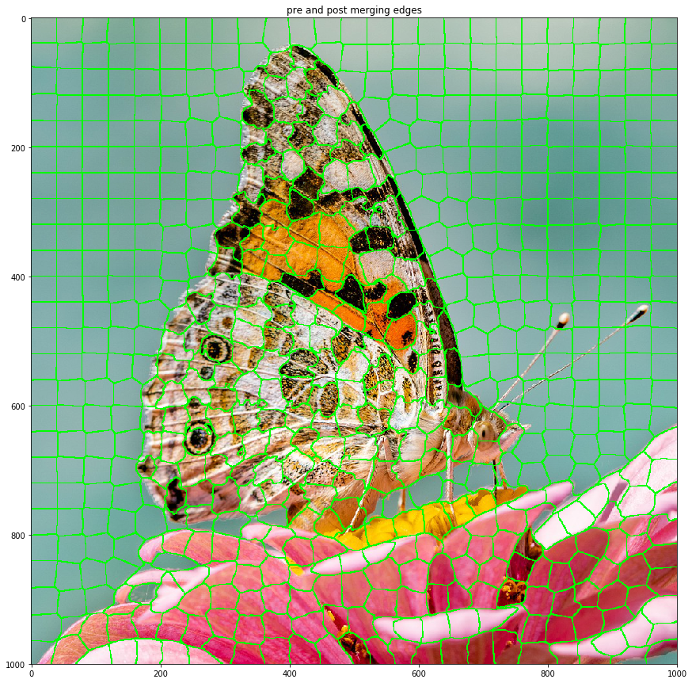
<p>This splitting makes several very small segments. We can force these to
merge with there largest neighbour with segment_group.</p>
<div class="code ipython3 highlight-default notranslate"><div class="highlight"><pre><span></span><span class="n">butterfly_segs</span><span class="o">.</span><span class="n">enforce_size</span><span class="p">(</span><span class="n">min_size</span><span class="o">=</span><span class="mi">50</span><span class="p">)</span>
</pre></div>
</div>
<div class="highlight-default notranslate"><div class="highlight"><pre><span></span><span class="mi">13</span> <span class="n">segments</span> <span class="n">merged</span>
<span class="n">Initalising</span> <span class="mi">65</span> <span class="n">segments</span>
<span class="n">Progress</span> <span class="o">|</span><span class="c1">###################################################| 1.6826 s</span>
</pre></div>
</div>
<p>Notice how only 65 segments were recreated; since those with unchanging
neighbours dont need any recaculations they are kept the same.</p>
<p>Now we can extract features from each segment, to do an extraction
function is needed.</p>
<div class="code ipython3 highlight-default notranslate"><div class="highlight"><pre><span></span><span class="c1"># define the features to be extracted</span>
<span class="k">def</span> <span class="nf">basic_color_extraction</span><span class="p">(</span><span class="n">Xs</span><span class="p">,</span> <span class="n">Ys</span><span class="p">,</span> <span class="n">img1</span><span class="p">):</span>
    <span class="n">avgs1</span> <span class="o">=</span> <span class="n">img1</span><span class="p">[</span><span class="n">Ys</span><span class="p">,</span> <span class="n">Xs</span><span class="p">]</span><span class="o">.</span><span class="n">mean</span><span class="p">(</span><span class="n">axis</span><span class="o">=</span><span class="mi">0</span><span class="p">)</span>
    <span class="k">return</span> <span class="p">[</span><span class="o">*</span><span class="n">avgs1</span><span class="p">]</span>

<span class="c1"># extract features</span>
<span class="n">butterfly_feats</span> <span class="o">=</span> <span class="n">butterfly_segs</span><span class="o">.</span><span class="n">feature_extraction</span><span class="p">(</span>
                      <span class="n">extract_func</span> <span class="o">=</span> <span class="n">basic_color_extraction</span><span class="p">,</span>
                      <span class="n">func_vars</span> <span class="o">=</span> <span class="p">[</span><span class="n">blured_img</span><span class="p">])</span>

<span class="c1"># inspect features</span>
<span class="n">titles</span> <span class="o">=</span> <span class="p">[</span><span class="s1">&#39;red_avg&#39;</span><span class="p">,</span> <span class="s1">&#39;green_avg&#39;</span><span class="p">,</span> <span class="s1">&#39;blue_avg&#39;</span><span class="p">]</span>
<span class="n">pd</span><span class="o">.</span><span class="n">DataFrame</span><span class="p">(</span><span class="n">butterfly_feats</span><span class="p">,</span> <span class="n">columns</span><span class="o">=</span><span class="n">titles</span><span class="p">)</span><span class="o">.</span><span class="n">describe</span><span class="p">()</span>
</pre></div>
</div>
<div>
<style scoped>
    .dataframe tbody tr th:only-of-type {
        vertical-align: middle;
    }

    .dataframe tbody tr th {
        vertical-align: top;
    }

    .dataframe thead th {
        text-align: right;
    }
</style>
<table border="1" class="dataframe">
  <thead>
    <tr style="text-align: right;">
      <th></th>
      <th>red_avg</th>
      <th>green_avg</th>
      <th>blue_avg</th>
    </tr>
  </thead>
  <tbody>
    <tr>
      <th>count</th>
      <td>628.000000</td>
      <td>628.000000</td>
      <td>628.000000</td>
    </tr>
    <tr>
      <th>mean</th>
      <td>0.633492</td>
      <td>0.590180</td>
      <td>0.548509</td>
    </tr>
    <tr>
      <th>std</th>
      <td>0.178521</td>
      <td>0.161467</td>
      <td>0.188331</td>
    </tr>
    <tr>
      <th>min</th>
      <td>0.139023</td>
      <td>0.050462</td>
      <td>0.034291</td>
    </tr>
    <tr>
      <th>25%</th>
      <td>0.495582</td>
      <td>0.529275</td>
      <td>0.465894</td>
    </tr>
    <tr>
      <th>50%</th>
      <td>0.584799</td>
      <td>0.646804</td>
      <td>0.618828</td>
    </tr>
    <tr>
      <th>75%</th>
      <td>0.780434</td>
      <td>0.693747</td>
      <td>0.668248</td>
    </tr>
    <tr>
      <th>max</th>
      <td>0.986018</td>
      <td>0.911795</td>
      <td>0.935627</td>
    </tr>
  </tbody>
</table>
</div><p>We have used a pandas dataframe to inspect the extracted features. They
seem good, with means and standard deviations of similar magnitude. We
can now use our chosen unspuervised clustering algorithm to group
segments by common features. Here we are using the AGNES clustering</p>
<div class="code ipython3 highlight-default notranslate"><div class="highlight"><pre><span></span><span class="n">butterly_AGNES</span> <span class="o">=</span> <span class="n">AGNES</span><span class="p">(</span><span class="n">butterfly_feats</span><span class="p">)</span>
<span class="n">butterly_AGNES</span><span class="o">.</span><span class="n">iterate</span><span class="p">()</span>
<span class="n">butterly_AGNES</span><span class="o">.</span><span class="n">cluster_distance_plot</span><span class="p">(</span><span class="s1">&#39;all&#39;</span><span class="p">)</span>
</pre></div>
</div>
<div class="highlight-default notranslate"><div class="highlight"><pre><span></span><span class="n">Progress</span> <span class="o">|</span><span class="c1">###################################################| 0.3728 s</span>
</pre></div>
</div>

<p>Plotted above is merge distance vs iterations and its respective
derivatives on the last few iterations. In the second derivative there
is a spike arounf iteration 610, suggesting that this is where we start
merging different material groups. To get this point we cluster up to a
certain viaration in standard deviation, here chosen to be 3.</p>
<div class="code ipython3 highlight-default notranslate"><div class="highlight"><pre><span></span><span class="c1"># get the clustering up to 3rd standard deviation</span>
<span class="n">butterly_clusters</span> <span class="o">=</span> <span class="n">butterly_AGNES</span><span class="o">.</span><span class="n">cluster_by_derivative</span><span class="p">(</span><span class="n">n_std</span><span class="o">=</span><span class="mf">3.</span><span class="p">,</span> <span class="n">plot</span><span class="o">=</span><span class="kc">False</span><span class="p">)</span>
</pre></div>
</div>
<div class="highlight-default notranslate"><div class="highlight"><pre><span></span><span class="n">Clustering</span> <span class="n">up</span> <span class="n">to</span> <span class="mi">2</span><span class="n">nd</span> <span class="n">derivative</span> <span class="mf">0.04021483184552015</span>  <span class="n">distance</span>  <span class="mf">0.3929593875662745</span>
<span class="n">Clustering</span> <span class="n">into</span> <span class="mi">14</span> <span class="n">segments</span>
</pre></div>
</div>
<p>By passing this clustering to the segment_group we can plot what
segments were cluster together.</p>
<div class="code ipython3 highlight-default notranslate"><div class="highlight"><pre><span></span><span class="c1"># assign these cluster in the segment groups</span>
<span class="n">butterfly_segs</span><span class="o">.</span><span class="n">assign_clusters</span><span class="p">(</span><span class="n">butterly_clusters</span><span class="p">)</span>

<span class="c1"># plot these clusters</span>
<span class="n">butterfly_segs</span><span class="o">.</span><span class="n">plot</span><span class="p">(</span><span class="s1">&#39;cluster_all&#39;</span><span class="p">,</span> <span class="n">back_img</span> <span class="o">=</span> <span class="n">original_img</span><span class="p">)</span>
</pre></div>
</div>

<p>Though only color was used the clusters are mostly reasonable, thoough a
few regions of wing are confused with sky. If we are happy with these
clusters we can merge with them, if not we can do another featuer
extraction and clustering without needing to reinitalise the
segment_group object.</p>
</div>
<div class="section" id="edge-analysis">
<h2>Edge analysis<a class="headerlink" href="#edge-analysis" title="Permalink to this headline">¶</a></h2>
<p>If we want to an edge detection can be done to assist the later merging
so that only segments with no edge between them are merged. This is not
needed to do the mergering, so this section can be skipped.</p>
<p>First we need an image with edges detected in it.</p>
<div class="code ipython3 highlight-default notranslate"><div class="highlight"><pre><span></span><span class="n">butterfly_IP</span><span class="o">.</span><span class="n">reset</span><span class="p">()</span>
<span class="n">butterfly_IP</span><span class="o">.</span><span class="n">scharr</span><span class="p">()</span>
<span class="n">grey_img</span> <span class="o">=</span> <span class="n">butterfly_IP</span><span class="o">.</span><span class="n">grey_scale</span><span class="p">()</span>
<span class="n">binary_edges</span> <span class="o">=</span> <span class="n">butterfly_IP</span><span class="o">.</span><span class="n">threshold</span><span class="p">(</span><span class="n">value</span><span class="o">=.</span><span class="mi">05</span><span class="p">)</span>
<span class="n">butterfly_IP</span><span class="o">.</span><span class="n">plot</span><span class="p">()</span>
</pre></div>
</div>

<p>Now by defining an edge confidence function with this image (similar to
the feature extraction function before) we can assign this to the
segment_group object.</p>
<div class="code ipython3 highlight-default notranslate"><div class="highlight"><pre><span></span><span class="c1"># define extraction function</span>
<span class="k">def</span> <span class="nf">edge_extraction</span><span class="p">(</span><span class="n">Xs</span><span class="p">,</span> <span class="n">Ys</span><span class="p">,</span> <span class="n">scharr_img</span><span class="p">):</span>
    <span class="k">return</span> <span class="n">scharr_img</span><span class="p">[</span><span class="n">Ys</span><span class="p">,</span> <span class="n">Xs</span><span class="p">]</span><span class="o">.</span><span class="n">mean</span><span class="p">()</span> <span class="o">/</span> <span class="n">scharr_img</span><span class="o">.</span><span class="n">std</span><span class="p">()</span>

<span class="c1"># pass this to the group object and plot it</span>
<span class="n">butterfly_segs</span><span class="o">.</span><span class="n">edge_confidence</span><span class="p">(</span><span class="n">confidence_func</span> <span class="o">=</span> <span class="n">edge_extraction</span><span class="p">,</span>
                               <span class="n">func_vars</span> <span class="o">=</span> <span class="p">[</span><span class="n">binary_edges</span><span class="p">])</span>
<span class="n">butterfly_segs</span><span class="o">.</span><span class="n">plot</span><span class="p">(</span><span class="s1">&#39;edge_conf&#39;</span><span class="p">,</span> <span class="n">back_img</span> <span class="o">=</span> <span class="n">original_img</span><span class="p">)</span>
</pre></div>
</div>

<p>So as we can see some edges are confident that they exist and others are
less so. Since these have been assigned to the segment_group they will
automatically be considered in the merging stage (the threshold for an
edge being present can be set if want)</p>
</div>
<div class="section" id="segment-merging">
<h2>Segment Merging<a class="headerlink" href="#segment-merging" title="Permalink to this headline">¶</a></h2>
<p>Now the segment_group knows the clustering (and edge confidences) we
can instruct it to merge segments that are adjasent, in the same cluster
(and have a edge confidence below the given threshold). Note we could
also merge without clusters and just edge confidence instead.</p>
<div class="code ipython3 highlight-default notranslate"><div class="highlight"><pre><span></span><span class="c1"># merge using clustering and edge confidence (if given)</span>
<span class="n">butterfly_segs</span><span class="o">.</span><span class="n">merge_by_cluster</span><span class="p">(</span><span class="n">edge_present</span><span class="o">=</span><span class="mf">1.</span><span class="p">)</span>

<span class="c1"># # merge if there is a low edge confidence only</span>
<span class="c1"># butterfly_segs.merge_by_edge(edge_absent=.1)</span>

<span class="c1"># plot the resultant clustering</span>
<span class="n">butterfly_segs</span><span class="o">.</span><span class="n">plot</span><span class="p">(</span><span class="s1">&#39;merged_edges&#39;</span><span class="p">,</span> <span class="n">back_img</span><span class="o">=</span><span class="n">butterfly_IP</span><span class="o">.</span><span class="n">imgs</span><span class="p">[</span><span class="s1">&#39;original&#39;</span><span class="p">])</span>
</pre></div>
</div>
<div class="highlight-default notranslate"><div class="highlight"><pre><span></span><span class="mi">412</span> <span class="n">segments</span> <span class="n">merged</span>
<span class="n">Initalising</span> <span class="mi">113</span> <span class="n">segments</span>
<span class="n">Progress</span> <span class="o">|</span><span class="c1">###################################################| 3.0159 s</span>
</pre></div>
</div>

</div>
<div class="section" id="repeat">
<h2>Repeat<a class="headerlink" href="#repeat" title="Permalink to this headline">¶</a></h2>
<p>At this point the process of clustering, edge detection and merging
could be repeated if wanted.</p>
<p>Caution is needed when clustering as there are less samples in the
clustering routene so it may struggle. Another point of caution is that
if one experiments with different clustering here it will affect the
clusters used in the segment analysis section.</p>
<p>This second repeat is done here as it is not benificial for this image.</p>
</div>
<div class="section" id="segmentation-analysis">
<h2>Segmentation Analysis<a class="headerlink" href="#segmentation-analysis" title="Permalink to this headline">¶</a></h2>
<p>Now we have our segmented image we can analyse the distributions within
each cluster.</p>
<p>First we need to create the Segment_Analysis obj with the segmentation
mask and clustering mask.</p>
<div class="code ipython3 highlight-default notranslate"><div class="highlight"><pre><span></span><span class="c1"># extract the cluster mask</span>
<span class="n">butterfly_cluster</span> <span class="o">=</span> <span class="n">butterfly_segs</span><span class="o">.</span><span class="n">get_cluster_mask</span><span class="p">()</span>

<span class="c1"># extract the segments mask</span>
<span class="n">butterfly_mask</span> <span class="o">=</span> <span class="n">butterfly_segs</span><span class="o">.</span><span class="n">mask</span>

<span class="c1"># create the segment analyser obj</span>
<span class="n">butterfly_SA</span> <span class="o">=</span> <span class="n">Segment_Analyser</span><span class="p">(</span><span class="n">img</span> <span class="o">=</span> <span class="n">original_img</span><span class="p">,</span>
                                <span class="n">mask</span> <span class="o">=</span> <span class="n">butterfly_mask</span><span class="p">,</span>
                                <span class="n">clusters</span><span class="o">=</span><span class="n">butterfly_cluster</span><span class="p">)</span>
</pre></div>
</div>
<p>We can then label each cluster as something more appropirate for the
analysis. If we think two clusters are actually part of the same
material we give them both the same label and the clusters are grouped.
Here we will just label with sky, wing or flower for simplicity. Note
that even within this relativly coarse labelling there are still regions
of conflict where segments of say wing and sky are clustered together.</p>
<div class="code ipython3 highlight-default notranslate"><div class="highlight"><pre><span></span><span class="n">butterfly_SA</span><span class="o">.</span><span class="n">set_labels</span><span class="p">()</span>
</pre></div>
</div>

<div class="highlight-default notranslate"><div class="highlight"><pre><span></span><span class="n">Currently</span> <span class="n">labelled</span>  <span class="mi">0</span>
<span class="n">Give</span> <span class="n">a</span> <span class="n">new</span> <span class="n">label</span> <span class="p">(</span><span class="n">leave</span> <span class="n">blank</span> <span class="n">to</span> <span class="n">unchange</span><span class="p">):</span>
<span class="n">wing</span>
</pre></div>
</div>
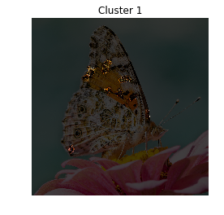
<div class="highlight-default notranslate"><div class="highlight"><pre><span></span><span class="n">Currently</span> <span class="n">labelled</span>  <span class="mi">1</span>
<span class="n">Give</span> <span class="n">a</span> <span class="n">new</span> <span class="n">label</span> <span class="p">(</span><span class="n">leave</span> <span class="n">blank</span> <span class="n">to</span> <span class="n">unchange</span><span class="p">):</span>
<span class="n">wing</span>
</pre></div>
</div>
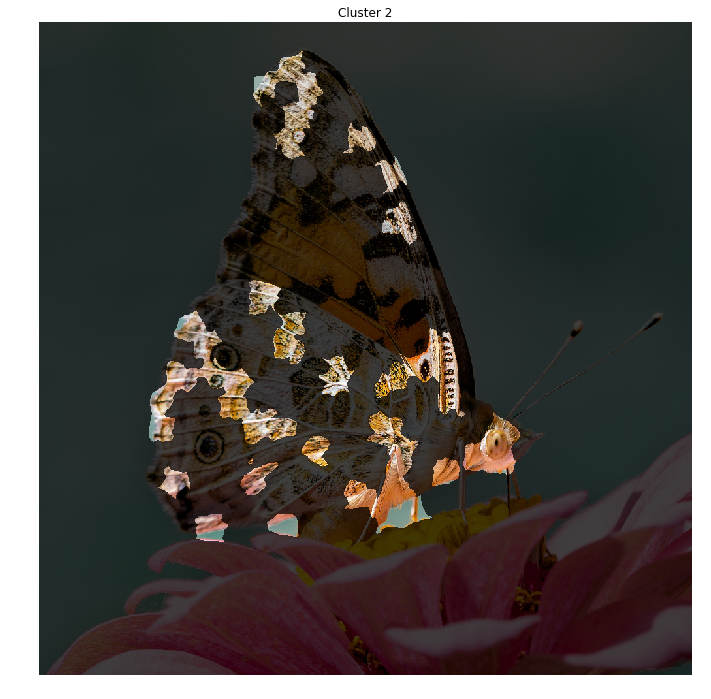
<div class="highlight-default notranslate"><div class="highlight"><pre><span></span><span class="n">Currently</span> <span class="n">labelled</span>  <span class="mi">2</span>
<span class="n">Give</span> <span class="n">a</span> <span class="n">new</span> <span class="n">label</span> <span class="p">(</span><span class="n">leave</span> <span class="n">blank</span> <span class="n">to</span> <span class="n">unchange</span><span class="p">):</span>
<span class="n">wing</span>
</pre></div>
</div>
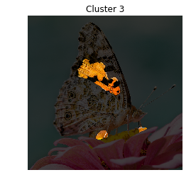
<div class="highlight-default notranslate"><div class="highlight"><pre><span></span><span class="n">Currently</span> <span class="n">labelled</span>  <span class="mi">3</span>
<span class="n">Give</span> <span class="n">a</span> <span class="n">new</span> <span class="n">label</span> <span class="p">(</span><span class="n">leave</span> <span class="n">blank</span> <span class="n">to</span> <span class="n">unchange</span><span class="p">):</span>
<span class="n">wing</span>
</pre></div>
</div>

<div class="highlight-default notranslate"><div class="highlight"><pre><span></span><span class="n">Currently</span> <span class="n">labelled</span>  <span class="mi">4</span>
<span class="n">Give</span> <span class="n">a</span> <span class="n">new</span> <span class="n">label</span> <span class="p">(</span><span class="n">leave</span> <span class="n">blank</span> <span class="n">to</span> <span class="n">unchange</span><span class="p">):</span>
<span class="n">flower</span> <span class="n">core</span>
</pre></div>
</div>
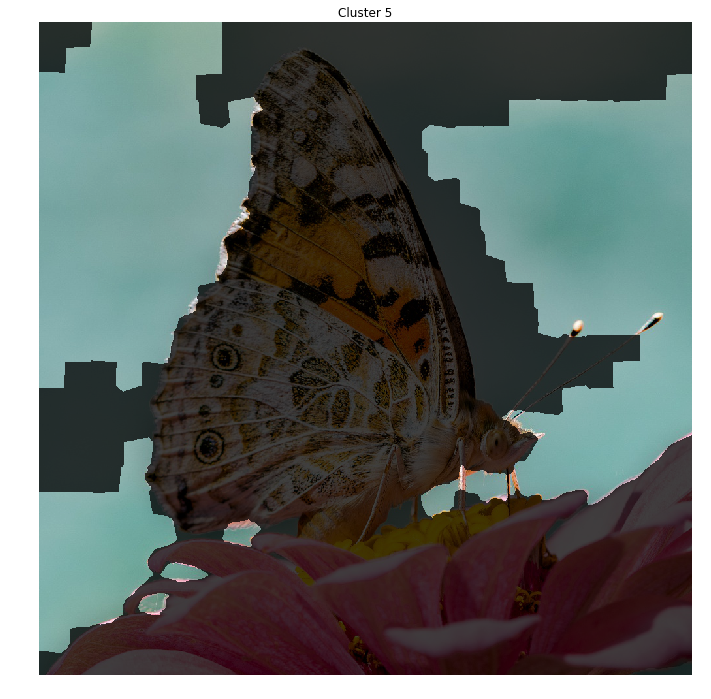
<div class="highlight-default notranslate"><div class="highlight"><pre><span></span><span class="n">Currently</span> <span class="n">labelled</span>  <span class="mi">5</span>
<span class="n">Give</span> <span class="n">a</span> <span class="n">new</span> <span class="n">label</span> <span class="p">(</span><span class="n">leave</span> <span class="n">blank</span> <span class="n">to</span> <span class="n">unchange</span><span class="p">):</span>
<span class="n">sky</span>
</pre></div>
</div>

<div class="highlight-default notranslate"><div class="highlight"><pre><span></span><span class="n">Currently</span> <span class="n">labelled</span>  <span class="mi">6</span>
<span class="n">Give</span> <span class="n">a</span> <span class="n">new</span> <span class="n">label</span> <span class="p">(</span><span class="n">leave</span> <span class="n">blank</span> <span class="n">to</span> <span class="n">unchange</span><span class="p">):</span>
<span class="n">flower</span> <span class="n">petal</span>
</pre></div>
</div>

<div class="highlight-default notranslate"><div class="highlight"><pre><span></span><span class="n">Currently</span> <span class="n">labelled</span>  <span class="mi">7</span>
<span class="n">Give</span> <span class="n">a</span> <span class="n">new</span> <span class="n">label</span> <span class="p">(</span><span class="n">leave</span> <span class="n">blank</span> <span class="n">to</span> <span class="n">unchange</span><span class="p">):</span>
<span class="n">flower</span> <span class="n">petal</span>
</pre></div>
</div>

<div class="highlight-default notranslate"><div class="highlight"><pre><span></span><span class="n">Currently</span> <span class="n">labelled</span>  <span class="mi">8</span>
<span class="n">Give</span> <span class="n">a</span> <span class="n">new</span> <span class="n">label</span> <span class="p">(</span><span class="n">leave</span> <span class="n">blank</span> <span class="n">to</span> <span class="n">unchange</span><span class="p">):</span>
<span class="n">sky</span>
</pre></div>
</div>

<div class="highlight-default notranslate"><div class="highlight"><pre><span></span><span class="n">Currently</span> <span class="n">labelled</span>  <span class="mi">9</span>
<span class="n">Give</span> <span class="n">a</span> <span class="n">new</span> <span class="n">label</span> <span class="p">(</span><span class="n">leave</span> <span class="n">blank</span> <span class="n">to</span> <span class="n">unchange</span><span class="p">):</span>
<span class="n">wing</span>
</pre></div>
</div>
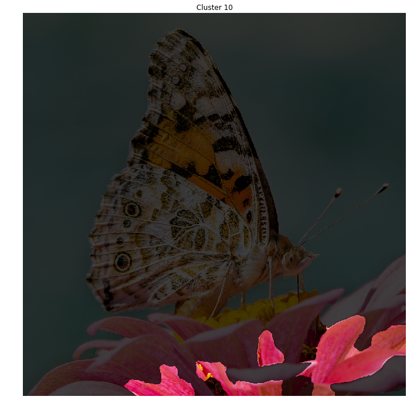
<div class="highlight-default notranslate"><div class="highlight"><pre><span></span><span class="n">Currently</span> <span class="n">labelled</span>  <span class="mi">10</span>
<span class="n">Give</span> <span class="n">a</span> <span class="n">new</span> <span class="n">label</span> <span class="p">(</span><span class="n">leave</span> <span class="n">blank</span> <span class="n">to</span> <span class="n">unchange</span><span class="p">):</span>
<span class="n">flower</span> <span class="n">petal</span>
</pre></div>
</div>
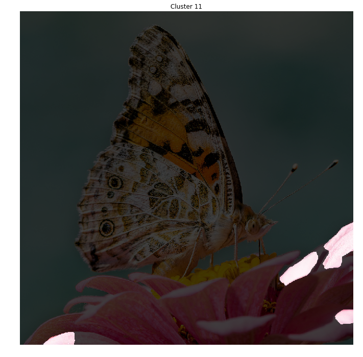
<div class="highlight-default notranslate"><div class="highlight"><pre><span></span><span class="n">Currently</span> <span class="n">labelled</span>  <span class="mi">11</span>
<span class="n">Give</span> <span class="n">a</span> <span class="n">new</span> <span class="n">label</span> <span class="p">(</span><span class="n">leave</span> <span class="n">blank</span> <span class="n">to</span> <span class="n">unchange</span><span class="p">):</span>
<span class="n">flower</span> <span class="n">petal</span>
</pre></div>
</div>
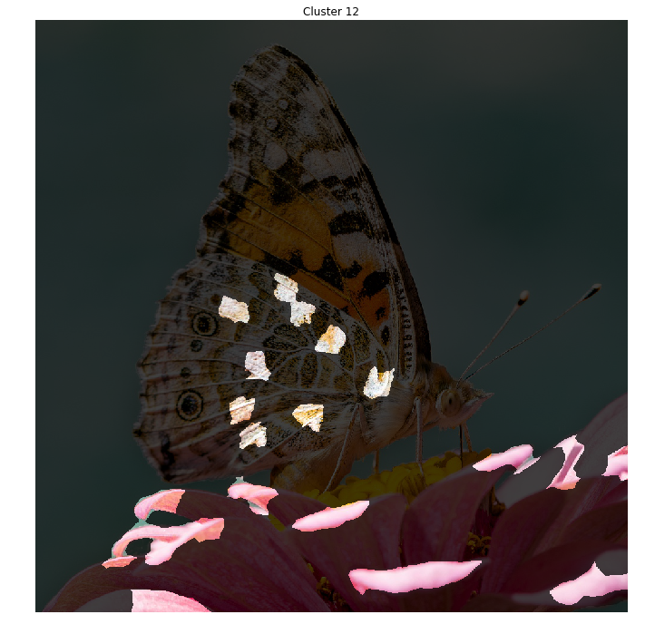
<div class="highlight-default notranslate"><div class="highlight"><pre><span></span><span class="n">Currently</span> <span class="n">labelled</span>  <span class="mi">12</span>
<span class="n">Give</span> <span class="n">a</span> <span class="n">new</span> <span class="n">label</span> <span class="p">(</span><span class="n">leave</span> <span class="n">blank</span> <span class="n">to</span> <span class="n">unchange</span><span class="p">):</span>
<span class="n">flower</span> <span class="n">petal</span>
</pre></div>
</div>

<div class="highlight-default notranslate"><div class="highlight"><pre><span></span><span class="n">Currently</span> <span class="n">labelled</span>  <span class="mi">13</span>
<span class="n">Give</span> <span class="n">a</span> <span class="n">new</span> <span class="n">label</span> <span class="p">(</span><span class="n">leave</span> <span class="n">blank</span> <span class="n">to</span> <span class="n">unchange</span><span class="p">):</span>
<span class="n">wing</span>
<span class="n">Current</span> <span class="n">Labels</span><span class="p">:</span> <span class="p">[</span><span class="s1">&#39;wing&#39;</span><span class="p">,</span> <span class="s1">&#39;flower core&#39;</span><span class="p">,</span> <span class="s1">&#39;sky&#39;</span><span class="p">,</span> <span class="s1">&#39;flower petal&#39;</span><span class="p">]</span>
</pre></div>
</div>
<p>Since the clusters are now labeled we can look at the overall (final)
segmentation.</p>
<div class="code ipython3 highlight-default notranslate"><div class="highlight"><pre><span></span><span class="n">butterfly_SA</span><span class="o">.</span><span class="n">plot_clusters</span><span class="p">()</span>
</pre></div>
</div>
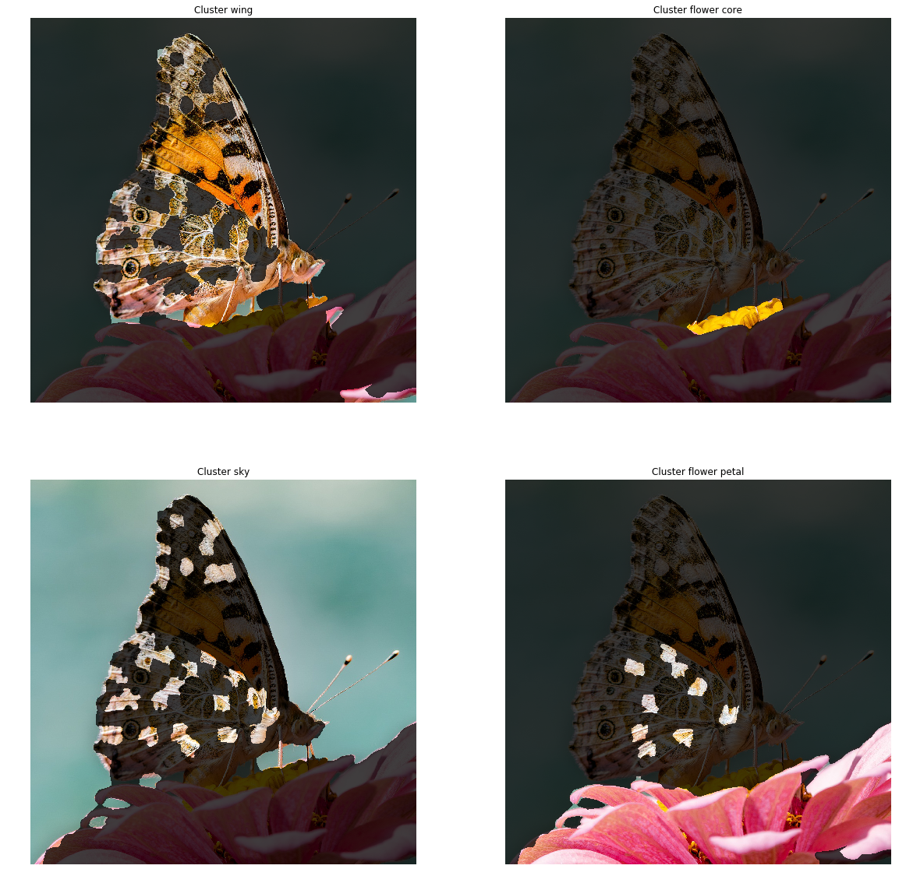
<p>As can be seen there is some confusion between bits of wing and the
other two regions, other than that the segementation seems ok.</p>
<p>We can see the distributions of each cluster as well.</p>
<div class="code ipython3 highlight-default notranslate"><div class="highlight"><pre><span></span><span class="n">butterfly_SA</span><span class="o">.</span><span class="n">get_composition</span><span class="p">()</span>
<span class="n">butterfly_SA</span><span class="o">.</span><span class="n">get_grain_count</span><span class="p">()</span>
</pre></div>
</div>
<div class="highlight-default notranslate"><div class="highlight"><pre><span></span><span class="n">Tabel</span> <span class="n">of</span> <span class="n">Compositions</span>
<span class="mf">20.56</span> <span class="o">%</span>      <span class="n">wing</span>
<span class="mf">0.95</span> <span class="o">%</span>       <span class="n">flower</span> <span class="n">core</span>
<span class="mf">57.57</span> <span class="o">%</span>      <span class="n">sky</span>
<span class="mf">20.92</span> <span class="o">%</span>      <span class="n">flower</span> <span class="n">petal</span>
<span class="n">Tabel</span> <span class="n">of</span> <span class="n">Grain</span> <span class="n">Count</span>
<span class="mi">130</span>          <span class="n">wing</span>
<span class="mi">2</span>    <span class="n">flower</span> <span class="n">core</span>
<span class="mi">44</span>   <span class="n">sky</span>
<span class="mi">40</span>   <span class="n">flower</span> <span class="n">petal</span>
</pre></div>
</div>
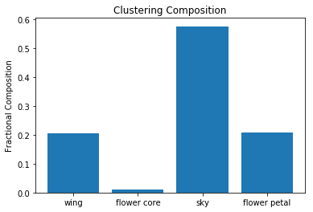
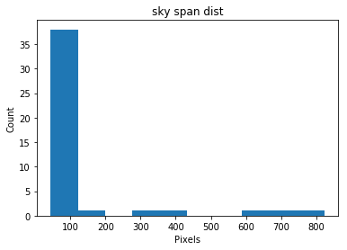
<div class="code ipython3 highlight-default notranslate"><div class="highlight"><pre><span></span><span class="c1"># these take slighly longer to find</span>
<span class="k">for</span> <span class="n">label</span> <span class="ow">in</span> <span class="p">[</span><span class="s1">&#39;sky&#39;</span><span class="p">,</span> <span class="s1">&#39;wing&#39;</span><span class="p">,</span> <span class="s1">&#39;flower core&#39;</span><span class="p">,</span> <span class="s1">&#39;flower petal&#39;</span><span class="p">]:</span>
    <span class="n">butterfly_SA</span><span class="o">.</span><span class="n">get_gsd</span><span class="p">(</span><span class="n">label</span><span class="p">)</span>
</pre></div>
</div>
<div class="highlight-default notranslate"><div class="highlight"><pre><span></span><span class="n">Progress</span> <span class="o">|</span><span class="c1">###################################################| 2.9440 scalculating span</span>

<span class="n">Progress</span> <span class="o">|</span><span class="c1">###################################################| 8.7556 scalculating span</span>

<span class="n">Progress</span> <span class="o">|</span><span class="c1">###################################################| 0.0686 scalculating span</span>

<span class="n">Progress</span> <span class="o">|</span><span class="c1">###################################################| 2.7868 scalculating span</span>

<span class="n">Progress</span> <span class="o">|</span><span class="c1">###################################################| 3.0739 s</span>
</pre></div>
</div>

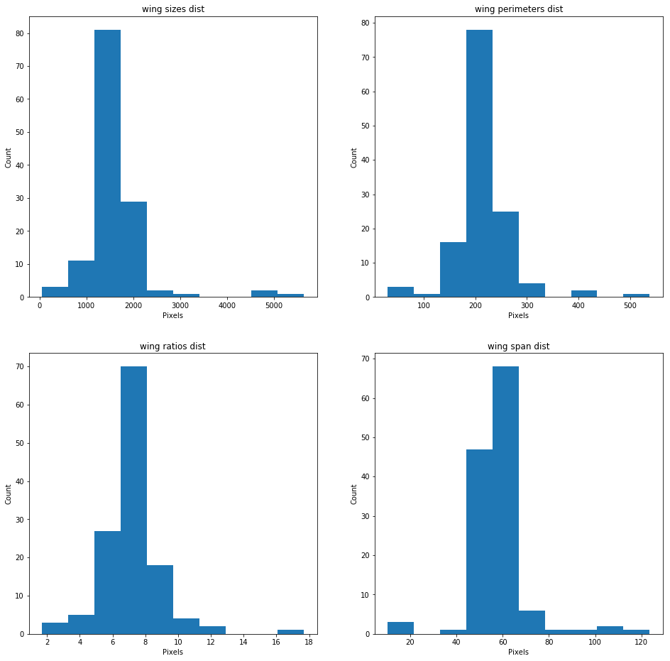
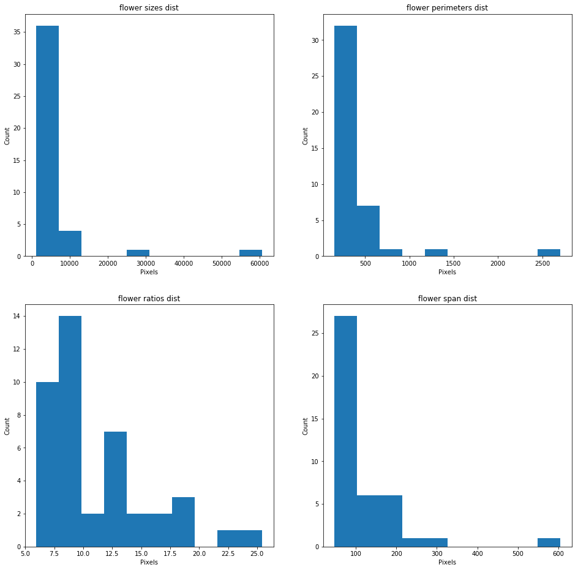

<p>If any of the results want to be further analysed than an option
return_arr in the above functions get the specific values plotted
above.</p>
<p>To save results all that needed is to save the segmentation mask and
cluster mask. These can likewise be used to pick up from any point in
the routene shown here.</p>
</div>
</div>


           </div>
           
          </div>
          <footer>
  
    <div class="rst-footer-buttons" role="navigation" aria-label="footer navigation">
      
        <a href="../mods/kmeans.html" class="btn btn-neutral float-right" title="kmeans" accesskey="n" rel="next">Next <span class="fa fa-arrow-circle-right"></span></a>
      
      
        <a href="../index.html" class="btn btn-neutral float-left" title="Automated Thin Section Analysis" accesskey="p" rel="prev"><span class="fa fa-arrow-circle-left"></span> Previous</a>
      
    </div>
  

  <hr/>

  <div role="contentinfo">
    <p>
        &copy; Copyright 2019, Richard Boyne

    </p>
  </div>
  Built with <a href="http://sphinx-doc.org/">Sphinx</a> using a <a href="https://github.com/rtfd/sphinx_rtd_theme">theme</a> provided by <a href="https://readthedocs.org">Read the Docs</a>. 

</footer>

        </div>
      </div>

    </section>

  </div>
  


  <script type="text/javascript">
      jQuery(function () {
          SphinxRtdTheme.Navigation.enable(true);
      });
  </script>

  
  
    
   

</body>
</html>